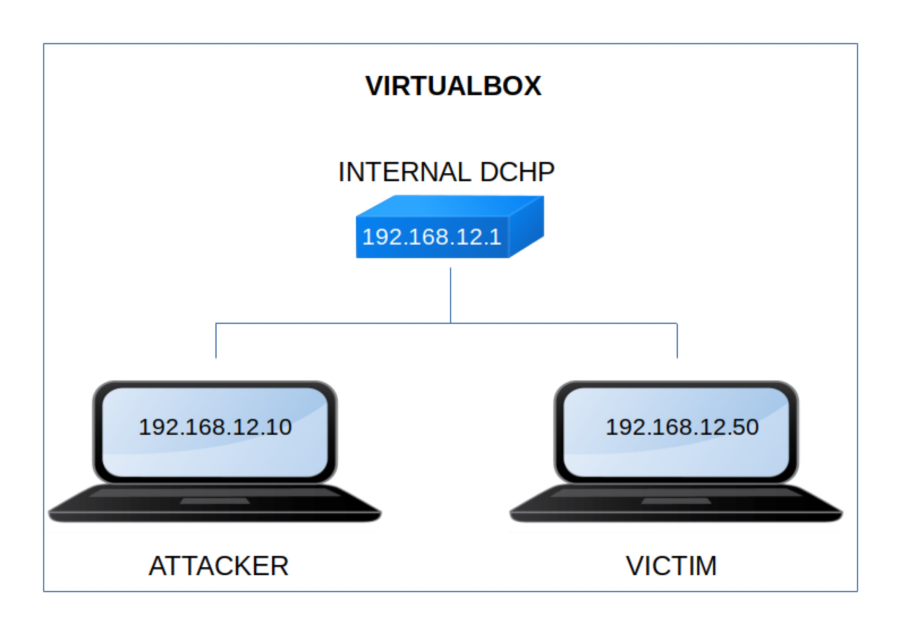

DriftingBlues 9
▸ DriftingBlues 9
▸ 1. Scan Network
▸ 2. Finding Services and Ports
▸ 3. Enumerate
▸ 4. Exploitation
▸ 4.1 Look for an exploit
▸ 4.2 Run the exploit
▸ 4.3 Reverse shell
▸ 4.4 Switch user (First flag)
▸ 5. Privilege Escalation
▸ 5.1 Buffer Overflow Exploit
▸ 5.1.2 Try the shell injection on the Kali Machine
▸ 5.1.3 Find the OFFSET_VALUE + EIP_VALUE + NOPS + BASH_SHELL_CODE
▸ 5.1.4 Get a shell on the victim's machine
Difficulty: Medium.
Flag: 2 flags.
Learning:
• Reconnaissance
Scan Network
Find services
• Enumerate
ApPHP Microblog
• Exploitation
Look for an exploit
Run the exploit
Reverse Shell
Switch user
• Privilege Escalation
Buffer Overflow Exploit
• Download (Mirror): https://download.vulnhub.com/driftingblues/driftingblues9.ova
• Download (Torrent): https://download.vulnhub.com/driftingblues/driftingblues9.ova.torrent
Install the machine on VirtualBox:
1. Download the file.
2. On Virtualbox choose File->Import Appliance.
3. Select the file “ova”.
4. Accept to import.

Watch your Machine IP.
$ ifconfig
Output:

Diagram
